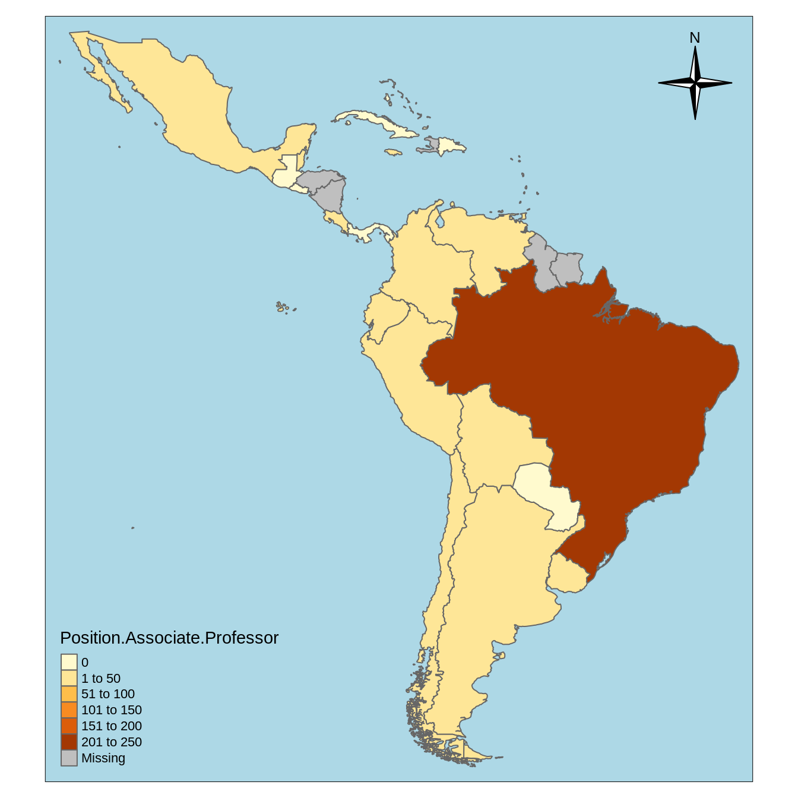
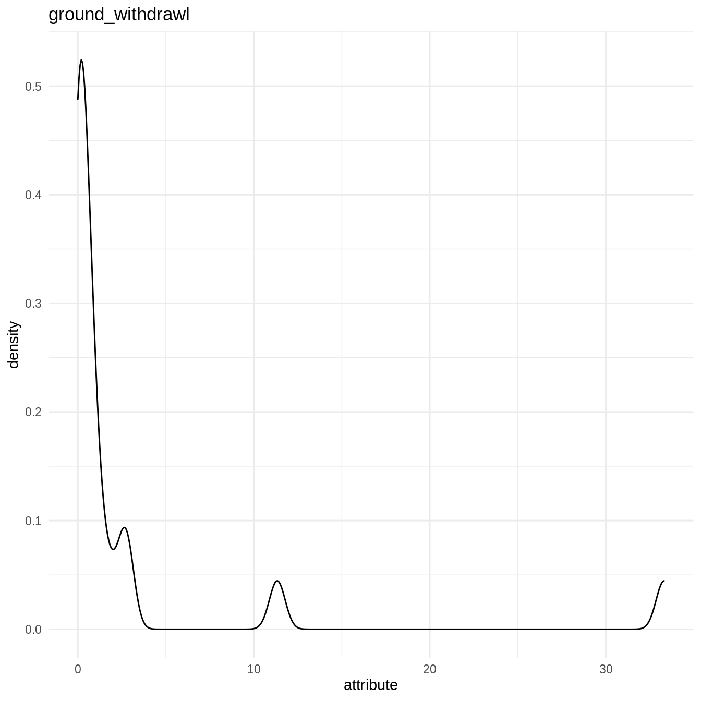

Clustering analysis
clustering_analysis.RmdPurpose
In this vignette, we perform some quality control on the database of country socio-hydrologic descriptors. After filtering, the data are examined with a correlation analysis and a clustering analysis.
Loading data
countries_shapefile <- join_database_shapefile(read_countries_database(), read_countries_shapefile()) att_names <- names(countries_shapefile)[-1]
Visualizing attributes
l.att_map <- lapply(names(countries_shapefile)[-1], make_map) sample(l.att_map, 1) #> [[1]] #> Linking to GEOS 3.7.1, GDAL 2.2.2, PROJ 4.9.2

l.att_hist <- lapply(names(countries_shapefile)[-1], make_hist) sample(l.att_hist, 1) #> [[1]] #> Warning: Removed 5 rows containing non-finite values (stat_density).

QA/QC on country database
Let’s rescale the data using the make_corrmatrix function with rescale = TRUE. The missmap() function the Amelia package then displays the missing values in the resulting rescaled data.frame.
rescaled_data <- make_corrmatrix(corr_type = "spearman", rescale = TRUE, .plot = FALSE) rownames(rescaled_data) <- countries_shapefile$COUNTRY Amelia::missmap(rescaled_data)

Some predictors are missing only in some countries. We now try to identify the best set of predictors and countries by counting the number of NA with count_nas() and varying the threshold of number of NA per countries.
count_nas_col <- apply(rescaled_data, MARGIN = 2, FUN = count_nas) count_nas_row <- apply(rescaled_data, MARGIN = 1, FUN = count_nas) names(count_nas_row) <- countries_shapefile$COUNTRY na_thresholds <- sort(unique(count_nas_row), decreasing = TRUE) list_count_nas_col <- lapply(na_thresholds, function(na_threshold){ filtered_data <- rescaled_data[count_nas_row <= na_threshold, ] current_count_nas_col <- apply(filtered_data, MARGIN = 2, FUN = count_nas) # columns return(current_count_nas_col) }) count_nas_col_df <- do.call(cbind, list_count_nas_col) list_country_left <- sapply(na_thresholds, function(na_threshold){ filtered_data <- rescaled_data[count_nas_row <= na_threshold, ] return(nrow(filtered_data)) }) par(mfrow = c(2, 1)) oce::imagep(t(count_nas_col_df), col = oce::oce.colorsViridis(), decimate = FALSE, xlab = "NA threshold", ylab = "Country descriptors", main = "", cex = 1) plot(list_country_left, xlab = "NA threshold", ylab = "Number of countries left")

Based on this visualization, we filter the country descriptors and drop the countries with missing values. Notice that these removed countries correspond to Carribean nations.
drops <- c("variability", "surface_withdrawl", "ground_withdrawl", "SPI..2017.", "SPI_basic_human", "SPI_found", "SPI_opp") rescaled_data <- rescaled_data[, !colnames(rescaled_data) %in% drops] count_nas_row <- apply(rescaled_data, MARGIN = 1, FUN = count_nas) # lines rownames(rescaled_data) <- countries_shapefile$COUNTRY # countries left rownames(rescaled_data[count_nas_row <= 0, ]) #> [1] "Argentina" "Belize" "Bolivia" #> [4] "Brazil" "Chile" "Colombia" #> [7] "Costa Rica" "Cuba" "Dominican Republic" #> [10] "Ecuador" "El Salvador" "Guatemala" #> [13] "Guyana" "Honduras" "Jamaica" #> [16] "Mexico" "Nicaragua" "Panama" #> [19] "Paraguay" "Peru" "Suriname" #> [22] "Uruguay" "Venezuela" # countries removed setdiff(countries_shapefile$COUNTRY, rownames(rescaled_data[count_nas_row <= 0, ])) #> [1] "Antigua and Barbuda" "Bahamas" #> [3] "Barbados" "Dominica" #> [5] "Grenada" "Haiti" #> [7] "St. Kitts and Nevis" "St. Lucia" #> [9] "St. Vincent and the Grenadines" "Trinidad and Tobago" filtered_data <- rescaled_data[count_nas_row <= 0, ] Amelia::missmap(filtered_data)

Correlation analysis
We can now calculate the correlations and distance matrices for all types of data.
Clustering analysis
Countries in the study area are clustered in relation with socio-hydrologic variables. Two methods of clustering are used: \(k\)-means clustering (Hartigan and Wong 1979) and hierarchical clustering (Murtagh 1983). The clustering is performed with Euclidian distances and following Ward’s criterion. The optimal number of clusters is investigated by evaluating the evolution with the number of clusters of the total within sums of square and of the average silhouette width (Rousseeuw 1987). In addition, the following four validation metrics are used to assess the stability of the clustering under the complete set of clustering variables and a iterative procedure where one variable is removed from the set, an approach akin to leave-one-out cross-validation:
- the average proportion of (APN) measures the proportion of observations not placed in the same cluster under both cases and evalutes how robust are the clusters under cross-validation (Datta and Datta 2003);
- the average distance between means (ADM) measures the variation of the cluster center and evaluates the stability of the localization of the cluster in the multi-dimensional clustering variable space (Datta and Datta 2003);
- average distance (AD) measures the distance between observations placed in the same cluster and evaluates within-cluster stability (Datta and Datta 2003);
- the figure of merit (FOM) estimates the predictive power of the clustering algorithm by measuring the within-cluster variance of the removed variable (Yeung, Haynor, and Ruzzo 2001).
Both clustering methods yield similar results. The total within sum of squares exhibits a shift in the evolution of the total within sum of square after two clusters are chosen. Similarly, the average silhouette width strongly exhibits a peak for two clusters. Further inspection of clustering in PCA dimensions indicates that the cluster with Mexico and Brazil is significantly distinct from all other countries, explaining the observation of a sharp peak in average silhouette width. However, validation metrics exhibits optimal null values of APN and ADM for two or three clusters. In addition, AD and FOM are lower for three clusters than for two. Based on this results, we chose three clusters to describe the grouping of countries based on their socio-hydrologic variables.
Optimum clustering
We now derive the optimum clustering for \(k\)-means and hierarchical clustering.
\(k\)-means
get_optimk(filtered_data, method = "kmeans")
Hierarchical clustering
get_optimk(filtered_data, method = "hierarchical")
Clustering stability
\(k\)-means
cl_stability <- clStab(filtered_data, method = "kmeans") stab <- cl_stability$stab optim_df <- cl_stability$optim_df summary(stab) #> #> Clustering Methods: #> kmeans #> #> Cluster sizes: #> 2 3 4 5 6 7 8 9 10 #> #> Validation Measures: #> 2 3 4 5 6 7 8 9 10 #> #> kmeans APN 0.0022 0.0000 0.0562 0.0702 0.1154 0.1833 0.1219 0.0912 0.1072 #> AD 5.9933 5.5334 4.9773 4.5944 4.3233 4.1371 3.5719 3.1712 2.9348 #> ADM 0.0237 0.0000 0.4368 0.3939 0.5818 1.3910 0.7739 0.5986 0.6711 #> FOM 0.7431 0.7033 0.6818 0.6633 0.6682 0.6501 0.6389 0.6244 0.6135 #> #> Optimal Scores: #> #> Score Method Clusters #> APN 0.0000 kmeans 3 #> AD 2.9348 kmeans 10 #> ADM 0.0000 kmeans 3 #> FOM 0.6135 kmeans 10 print("Optimal Number of Cluster under One Std Rule") #> [1] "Optimal Number of Cluster under One Std Rule" print(optim_df) #> measure cluster #> 1 APN 2 #> 2 AD 8 #> 3 ADM 2 #> 4 FOM 7
Hierarchical clustering
cl_stability <- clStab(filtered_data, method = "hierarchical") stab <- cl_stability$stab optim_df <- cl_stability$optim_df summary(stab) #> #> Clustering Methods: #> hierarchical #> #> Cluster sizes: #> 2 3 4 5 6 7 8 9 10 #> #> Validation Measures: #> 2 3 4 5 6 7 8 9 10 #> #> hierarchical APN 0.0000 0.0000 0.0041 0.0400 0.0505 0.0512 0.0677 0.0815 0.0828 #> AD 5.9857 5.5736 5.1332 4.7328 4.3883 3.9961 3.6887 3.2904 3.0251 #> ADM 0.0000 0.0000 0.0316 0.3577 0.4152 0.3476 0.4170 0.6353 0.5779 #> FOM 0.7376 0.7056 0.7033 0.6737 0.6643 0.6493 0.6465 0.6264 0.6129 #> #> Optimal Scores: #> #> Score Method Clusters #> APN 0.0000 hierarchical 2 #> AD 3.0251 hierarchical 10 #> ADM 0.0000 hierarchical 2 #> FOM 0.6129 hierarchical 10 print("Optimal Number of Cluster under One Std Rule") #> [1] "Optimal Number of Cluster under One Std Rule" print(optim_df) #> measure cluster #> 1 APN 2 #> 2 AD 7 #> 3 ADM 2 #> 4 FOM 7
Cluster visualization
\(k\)-means
k2 <- kmeans(filtered_data, centers = 3, nstart = 25) fviz_cluster(k2, geom = "text", data = filtered_data) + cowplot::theme_cowplot()
References
Datta, Susmita, and Somnath Datta. 2003. “Comparisons and Validation of Statistical Clustering Techniques for Microarray Gene Expression Data.” Bioinformatics 19 (4). Oxford University Press: 459–66.
Hartigan, J. A., and M. A. Wong. 1979. “A K-means Clustering Algorithm.” Journal of the Royal Statistical Society. Series C (Applied Statistics) 28 (1): 100–108. http://www.jstor.org/stable/2346830?origin=JSTOR-pdf.
Murtagh, Fionn. 1983. “A Survey of Recent Advances in Hierarchical Clustering Algorithms.” The Computer Journal 26 (4). Oxford University Press: 354–59.
Rousseeuw, Peter J. 1987. “Silhouettes: A Graphical Aid to the Interpretation and Validation of Cluster Analysis.” Journal of Computational and Applied Mathematics 20. North-Holland: 53–65.
Yeung, Ka Yee, David R. Haynor, and Walter L. Ruzzo. 2001. “Validating Clustering for Gene Expression Data.” Bioinformatics 17 (4). Oxford University Press: 309–18.